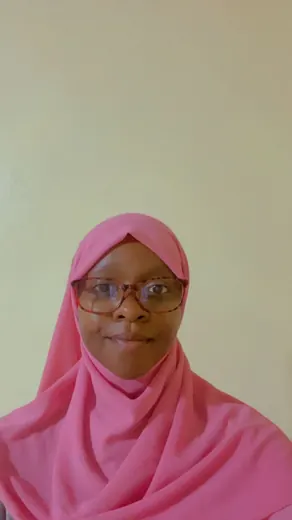

Software Development
Responsive websites, front-end interfaces, database-backed thinking, React, Python, and practical web projects.

01 / INTRO NAIROBI, KESoftware · Data · Digital craft
Software developer & digital creative
I bring ideas into focus through code, thoughtful systems, clear information, and visual stories made for real people.
My foundation is software development. I studied systems, databases, web development, and programming, then applied that thinking through React, Python, ICT support, field data work, and digital design.
What connects the work is structure. Whether I am building a website, documenting programme data, testing a system, or creating campaign graphics, I care about clarity, accuracy, and how easily another person can use the result.
I am still learning, and I welcome every chance to grow. Each new challenge reminds me that behind every system, story, and design are real people. I want to keep listening, keep improving, and do work that makes their lives a little easier.
Responsive websites, front-end interfaces, database-backed thinking, React, Python, and practical web projects.
Field surveys, summaries, structured records, data handling, and careful programme documentation.
Testing, troubleshooting, user support, technical documentation, and improving how systems work for teams.
Social media graphics, campaign posters, digital marketing visuals, and mobile-ready content layouts.
Selected Projects
These projects reflect my software side: organized content, usable pages, responsive interfaces, and systems built for real needs.
A store management system designed for product records, organized data, and practical day-to-day handling.
Education Platform Afripath EducationAn education website with clear content structure, approachable navigation, and responsive presentation.
Community Platform Noor ProjectAn interactive web platform focused on clean UI, accessible content, and community-centered presentation.
React Application JustGotBetter V1A React project used to strengthen component structure, interface flow, and performance-focused integration.
Visual Archive
The design archive remains part of the portfolio, but it now supports the broader picture: I can communicate through code, systems, documents, and visuals.
Profile
I like work that needs both discipline and creativity. My software background helps me understand systems, my design work helps me communicate clearly, and my field/ICT experience keeps me focused on real users and real operations.
Research online sources, cross-check information for accuracy, and organize findings into clear summaries with source references.
Created social media graphics, campaign artwork, and branded digital content while adapting layouts for different platforms and deadlines.
Designed and deployed web applications using React.js and Python, with API and cloud environment work before resigning in April 2026.
Supported field surveys, rapporteur work, summaries, and careful handling of confidential programme information.
Tested applications, documented software faults, and provided troubleshooting for communication systems. Helped streamline a multipage web application to improve usability.
Graduated with Second Upper Class Honors, with coursework in database management, web development, and programming fundamentals.
Contact